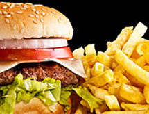
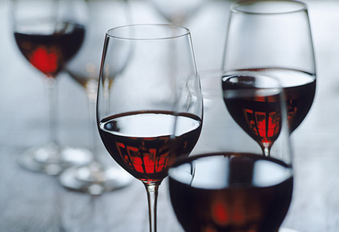

Какие продукты нужно кушать, чтобы избежать депрессии? Стоит ли полностью воздержаться от употребления алкоголя или иногда можно себе позволить? Если да, то какое количество алкоголя не оказывает вредного влияния на когнитивную функцию?
Диета и депрессия
По результатам когортного исследования, проведённого в 2012 г. среди почти 9000 взрослых испанцев, было показано, что у лиц, часто употребляющих фастфуд, была на 40% выше вероятность развития депрессии, чем у тех, кто избегает гамбургеров, пиццу и другую подобную еду.

В другом исследовании была выявлена взаимосвязь употребления оливкового масла, мононенасыщенных жирных кислот (МНЖК) и полиненасыщенных жирных кислот (ПНЖК) с протективным эффектом и снижением риска депрессии. Командой учёных было сообщено, что структура питания, характеризующаяся более высоким уровнем употребления переработанной или жареной пищи, очищенных зерновых и сахаристых продуктов, связана с увеличением частоты депрессии и тревожности у взрослого населения Австралии и Норвегии. Аналогичным образом, нездоровое питание было связано с повышенным риском депрессии по шкале самооценки с течением времени у государственных служащих.
Опасен ли алкоголь
Данные о воздействии алкоголя на мозг противоречивые и, как представляется, его влияние в значительной степени зависит от дозы. Употребление в небольших и умеренных количествах связано с меньшим риском развития слабоумия, а, например, красное вино может защищать от сердечно-сосудистых заболеваний. Результаты недавно проведённого исследования позволили предположить, что ограниченное потребление связано с улучшением липидного профиля, функции тромбоцитов и свертывания крови, а также с повышением чувствительности тканей к инсулину и, более того, способно защитить от рассеянного склероза. Однако употребление алкоголя в больших количествах может привести к злоупотреблению и появлению зависимости, расстройствам памяти, психологическим расстройствам и нарушению профессионального функционирования, а также развитию нейродегенеративных заболеваний. Согласно недавно проведённому исследованию, мужчины средних лет, которые выпивают более 2,5 порций алкогольного напитка ежедневно, с большей вероятностью подвержены быстрому снижению всех когнитивных функций, в частности, памяти, в течение 10 лет.

Brain Food: What to Avoid
Medscape